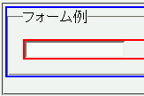
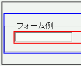

fieldset要素にパディングを設定すると、上パディングがボーダー領域の外側に設置される。
<form style="padding:0; border:2px solid blue;"> <fieldset style="margin:0; padding:1em;"> <legend style="margin:0; padding:0;">フォーム例</legend> <div style="border:2px solid red;"> <input type="text"></div> </fieldset> </form>
fieldset要素の四方に1emのパディングを設定しています。form要素のパディング、fieldset要素のマージン、legend要素のマージンとパディングはそれぞれ0にしています。
N7.02での表示（標準モード）
WinIE6.0での表示（標準モード）
スクリーンショットでは左パディングが正常に設置されていますが、環境によっては左右パディングがまったく設置されないことがあるようです。
WinIE5.5、WinIE6.0標準モード、WinIE6.0互換モードで不具合の発生を確認しました。